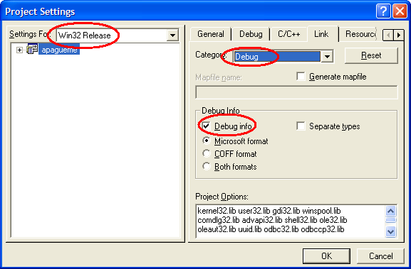

WinDbg: Debugger de gente grande (parte 3)
Plano de decolagem
Nessa terceira parte veremos a funcionalidade do WinDbg responsável pelo nosso querido "source level debug": os symbols. "Source level debug" nada mais é do que o debug que estamos acostumados a fazer na IDE do Visual C++, o debug usando os fontes como referência ao invés do assembly nu e cru.
Symbols: para que servem?
Os symbols são as informações de debug e referência de uma imagem executável. Quando um executável C/C++ é compilado, ele transforma as instruções da linguagem em assembly x86, e nessa tradução, as informações de tipo de dados que são usadas na linguagem se perdem. Exemplo: A instrução x86 MOV move um inteiro 32 bits entre registradores/memória. O processador não faz a menor idéia se o int que está sendo movido provém de uma variável, de um struct, se é um ponteiro ou um cast de algum outro tipo de dados. Vamos usar um programa simples para exemplificar:
typedef struct _TEST_STRUCT
{
int d;
int e;
} TEST_STRUCT;
int Aumenta(int i)
{
return i + 2;
}
int _tmain(int argc, _TCHAR* argv[])
{
int a;
int b;
int c;
TEST_STRUCT test;
a = 10;
b = 20;
c = 30;
a = b;
test.d = a;
test.e = Aumenta(c);
return 0;
}
Esse programa declara alguns inteiros e um struct, e atribui diversos valores a eles. Vamos ver como fica o assembly disso (sem otimização, claro):
; ; inicialização da pilha debug ; push ebp mov ebp,esp sub esp,0xf4 push ebx push esi push edi lea edi,[ebp-0xf4] mov ecx,0x3d mov eax,0xcccccccc rep stosd ; ; aqui começam as atribuições ; mov dword ptr [ebp-0x8],0xa ; atribui 10 à variável [a] mov dword ptr [ebp-0x14],0x14 ; atribui 20 à variável [b] mov dword ptr [ebp-0x20],0x1e ; atribui 30 à variável [c] mov eax,[ebp-0x14] ; move o valor de [b] para EAX mov [ebp-0x8],eax ; move o valor de EAX para [a] mov eax,[ebp-0x8] ; move o valor de [a] para EAX mov [ebp-0x30],eax ; move o valor de EAX para [test.d] mov eax,[ebp-0x20] ; move o valor de [c] para EAX push eax ; coloca o valor de EAX na pilha call 0x0041150a ; chama a função "Aumenta" add esp,0x4 ; como a função é __cdecl, volta a pilha mov [ebp-0x2c],eax ; atribui o retorno de "Aumenta" à [test.e]
Podemos ver claramente a atribuição das variáveis aqui. Mas isso só acontece porque temos os fontes e sabemos que as variáveis existem. Note que todos os MOVs são feitos em relação a endereços de memória e registradores. Note também que não existe diferença alguma entre a atribuição de variáveis simples e as atribuições para membros de uma estrutura. O processador é instruído a mover determinados valores para determinados endereços de memória, mas ele não sabe que naquele endereço existe uma variável. Em C/C++, essa informação das variáveis se perde durante a compilação, porque ela não é necessária para que o programa seja executado.
Apesar dessa informação ser desnecessária para que o sistema operacional e o processador executem o programa, ela é muito útil na hora de fazer o debug do executável. Caso não tivéssemos o fonte desse programa seria muito difícil descobrir que as últimas atribuições são para membros de uma estrutura.
Aí que entram os symbols. Eles contém as associações entre os endereços de memória e as variáveis e funções. Assim é possível saber durante uma sessão de debug, que call 0x0041150a é na verdade um call [Aumenta].
Vendo os symbols funcionando
Quando um programa C/C++ é compilado em configuração DEBUG, os symbols são incluídos dentro do arquivo executável. Assim, não é necessário ter um arquivo de symbols separado. Como o Windows é compilado em RELEASE, todos os EXEs e DLLs que fazem parte dele não contém informações de debug. Mas a Microsoft disponibiliza os arquivos de symbols separadamente (somente com os nomes de funções, sem as variáveis).
No WinDbg, é necessário informar a localização dos arquivos com o symbols, bem como a localização dos fontes. O Visual C++ coloca a localização dos fontes junto com os symbols dentro de um executável DEBUG, mas ele usa o caminho absoluto (que pode não ser o mesmo no momento que você estiver fazendo debug). Para informar os caminhos dos symbols e dos fontes, use os menus "File" >> "Symbol File Path..." e "File" >> "Source File Path" respectivamente.
Vamos fazer um teste com o nosso programinha do primeiro artigo da série, para ver qual a grande diferença entre o "com symbols" e o "olhe mamãe, sem os symbols" durante o debug de um executável Windows. Siga os seguintes passos:
- Compile o programa, se você ainda não fez. No primeiro artigo você acha as instruções para isso;
- Abra o CPP do programa (usando o menu "File" >> "Open Source File") e coloque um breakpoint na linha onde o objeto do ActiveDesktop é criado;
- Pressione F5 e deixe o programa parar no breakpoint. Quando ele chegar coloque o breakpoint na função RegOpenKeyExW, usando o comando "bp ADVAPI32!RegOpenKeyExW" (como explicado na parte 2);
- Pressione F5 para que o programa siga até o breakpoint em RegOpenKeyExW.
Agora que chegamos até aqui, vamos ver o que temos. O comando "k" mostra as funções que estão na pilha:
0:000> k ChildEBP RetAddr WARNING: Stack unwind information not available. Following frames may be wrong. 0012fba0 7751c837 ADVAPI32!RegOpenKeyExW 0012fbc0 7751c549 ole32!CoGetComCatalog+0x1f0 0012fbd8 7751c65c ole32!CoRevokeClassObject+0xf4f 0012fbec 7751c5e1 ole32!CoGetComCatalog+0x15 0012fc08 77501aed ole32!CoRevokeClassObject+0xfe7 0012fc10 77501b29 ole32!CoCreateInstance+0x17c7 0012fc30 77500200 ole32!CoCreateInstance+0x1803 0012fd14 7750031d ole32!OleInitialize+0xd6e 0012fd3c 775002ec ole32!CoCreateInstanceEx+0x4f 0012fd60 7750035a ole32!CoCreateInstanceEx+0x1e 0012fd90 00412b32 ole32!CoCreateInstance+0x34 0012fedc 0041f4df 1bit_windbg!wmain+0xf2 [c:\temp\code\1bit_windbg\1bit_windbg.cpp @ 47] 0012ffc0 7c816d4f 1bit_windbg!wmainCRTStartup+0x16f [f:\vs70builds\3077\vc\crtbld\crt\src\crt0.c @ 256] 0012fff0 00000000 kernel32!RegisterWaitForInputIdle+0x49
Podemos notar que existem diversas chamadas dentro da OLE32.DLL antes de chamar advapi32!RegOpenKeyExW. Note também que a pilha da OLE32 mostra que aparentemente temos algumas funções recursivas (que chamam a si mesmas), como a CoCreateInstanceEx, mas não é esse o caso. Na verdade, a instrução que está em ole32!CoCreateInstance+0x1803 chamou uma função, e a instrução dessa função que está em ole32!CoCreateInstance+0x17c7 fez outra chamada. O que acontece nesse caso é que, como o WinDbg não possui os symbols dos endereços citados, ele usa notação "symbol mais próximo conhecido" + offset. CoCreateInstance é conhecido porque é uma função exportada da OLE32.DLL, e o WinDbg consegue saber seu endereço sem ter os symbols (podemos ver isso também usando o Depends.exe, que vem com o Visual C++ e com o Platform SDK).
Vamos fazer a mágica dos symbols funcionar: primeiro crie a pasta "C:\WebSymbols" (ou outro nome de preferência) no seu computador. Depois abra "File" >> "Symbols File Path", adicione "srv*C:\WebSymbols*http://msdl.microsoft.com/download/symbols" em "Symbol Path". Selecione "Reload" e clique em OK (é necessário estar conectado à Internet). Vamos ver a pilha novamente:
ChildEBP RetAddr 0012fb58 7751c6bd ADVAPI32!RegOpenKeyExW 0012fba0 7751c837 ole32!CComCatalog::TryToLoadCLB+0x66 0012fbc0 7751c549 ole32!CComCatalog::AddRef+0x25 0012fbd8 7751c65c ole32!CComCatalog::QueryInterface+0x106 0012fbec 7751c5e1 ole32!GetCatalogHelper+0x15 0012fc08 77501aed ole32!InitializeCatalogIfNecessary+0x32 0012fc10 77501b29 ole32!GetClassInfoFromClsid+0xa 0012fc30 77500200 ole32!LookForConfiguredClsid+0x19 0012fd14 7750031d ole32!ICoCreateInstanceEx+0x106 0012fd3c 775002ec ole32!CComActivator::DoCreateInstance+0x28 0012fd60 7750035a ole32!CoCreateInstanceEx+0x1e 0012fd90 00412b32 ole32!CoCreateInstance+0x37 0012fedc 0041f4df 1bit_windbg!wmain+0xf2 [c:\temp\code\1bit_windbg\1bit_windbg.cpp @ 47] 0012ffc0 7c816d4f 1bit_windbg!wmainCRTStartup+0x16f [f:\vs70builds\3077\vc\crtbld\crt\src\crt0.c @ 256] 0012fff0 00000000 kernel32!BaseProcessStart+0x23
Agora temos os nomes das funções internas da OLE32.DLL. Isso é MUITO útil na hora de diagnosticar problemas que acontecem em chamadas à Win32 API. Essa string que colocamos no "Symbol Path" instrui o WinDbg a procurar no servidor de symbols da Microsoft os symbols não encontrados localmente. Veja depois o conteúdo de "c:\WebSymbols" para ver como o WinDbg organiza os symbols baixados. Os symbols para a maioria dos EXEs e DLLs que fazem parte do Windows estão disponíveis no Symbol Server da Microsoft.
Gerando seus próprios symbols
Os arquivos de symbols são extremamente úteis quando é necessário fazer debug de uma versão RELEASE do seu software, mas no computador de um cliente. Isso pode ser necessário para diagnosticar um erro que só acontece em um cliente específico, e não é possível simular em outro lugar.
Uma boa idéia é ter no controle de versões (SourceSafe, CVS, Subversion, etc) os executáveis que são enviados para os clientes, assim como os respectivos symbols. Assim, quando for necessário diagnosticar o problema in loco, é só gravar um CD com a pasta do WinDbg (não precisa instalar, grave a pasta "Program Files\Debugging Tools for Windows" e execute de lá mesmo), os symbols da versão RELEASE e os fontes usados para compilar essa versão.
Para gerar os symbols no Visual C++ 6.0, entre nas propriedades do projeto, aba "Link", escolha a categoria "Debug" e selecione a opção "Debug Info"

Para gerar os symbols no Visual C++ 7.x (VS.NET 2002/2003), entre nas propriedades do projeto, "Linker" >> "Debugging" no TreeView do lado esquerdo e configure "Generate Debug Info" como "YES (/DEBUG)".

Em ambos os casos o Visual C++ gerará um arquivo PDB na pasta onde o programa está sendo compilado.


Parabéns, fantasticas as materias gostei muito!
Continue escrevendo sobre este assunto, pois o conhecimento de tal ferramenta é fundamental aos desenvolvedores. Gostaria de obter mais informações sobre debugger de crash-dump. Pois venho usando o windbg para tal finalidade e quero obter mais informaçõe de tecnicas sobre esta finalidade. Quanto debugar processos, gostaria de obter informações sobre como fazer break-point condicional.
[ ]s,
Evandro Nascimento